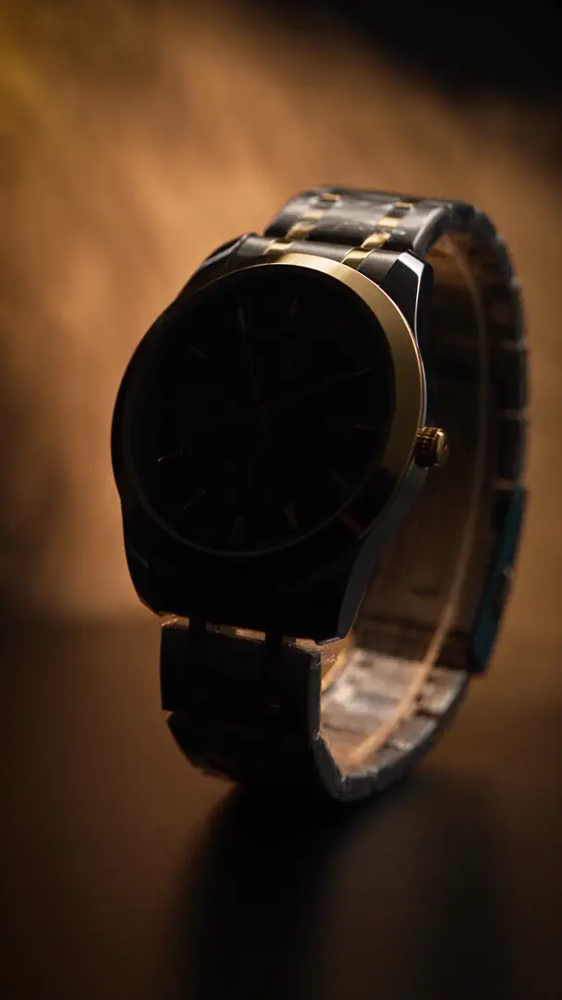
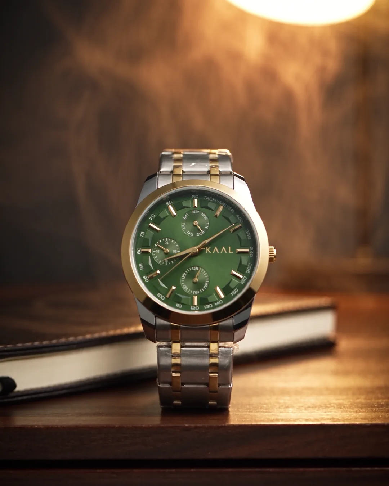
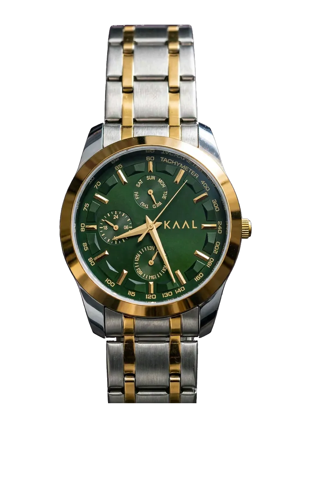
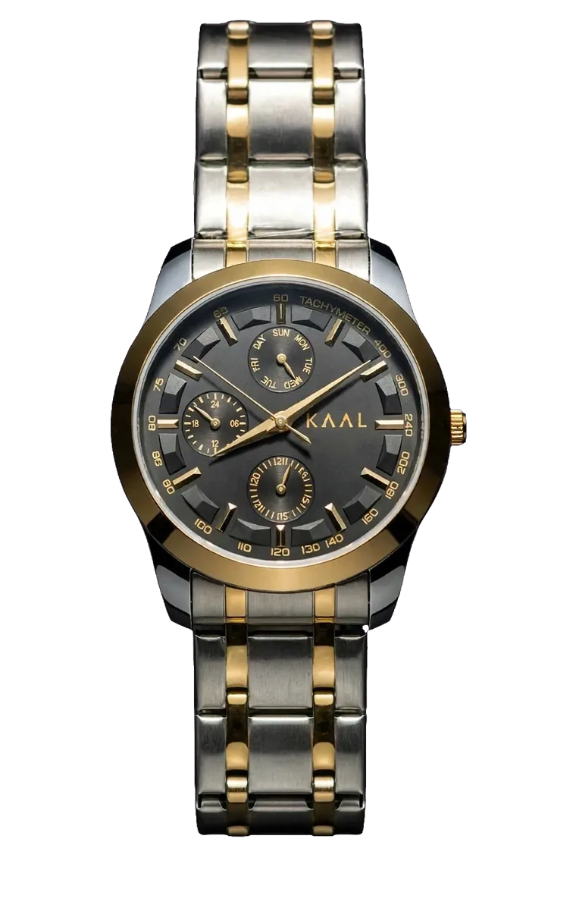
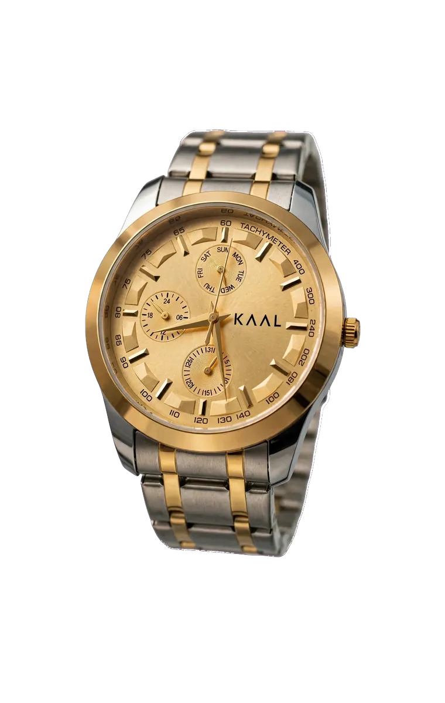
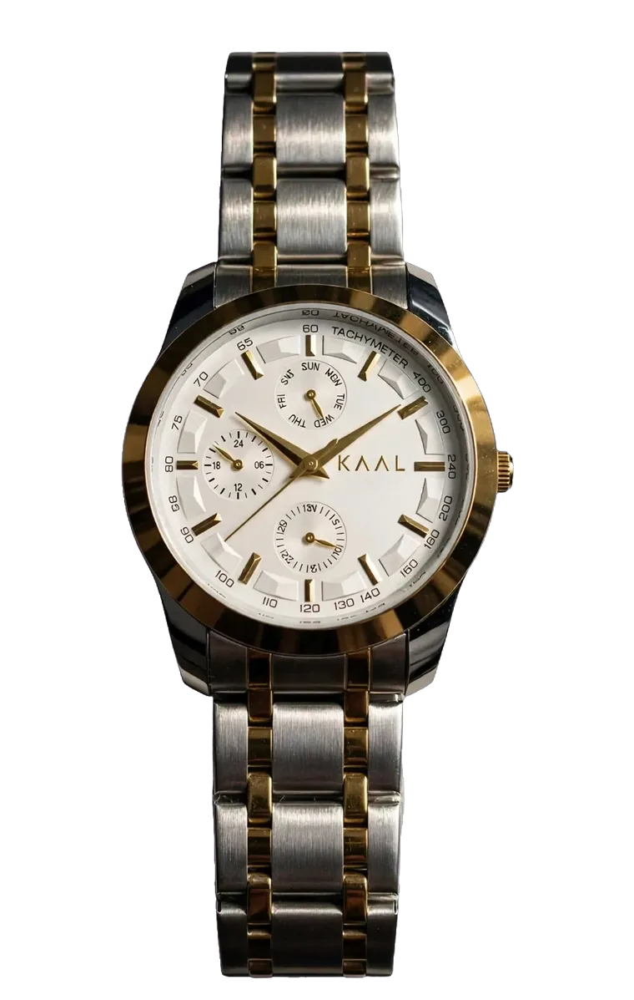
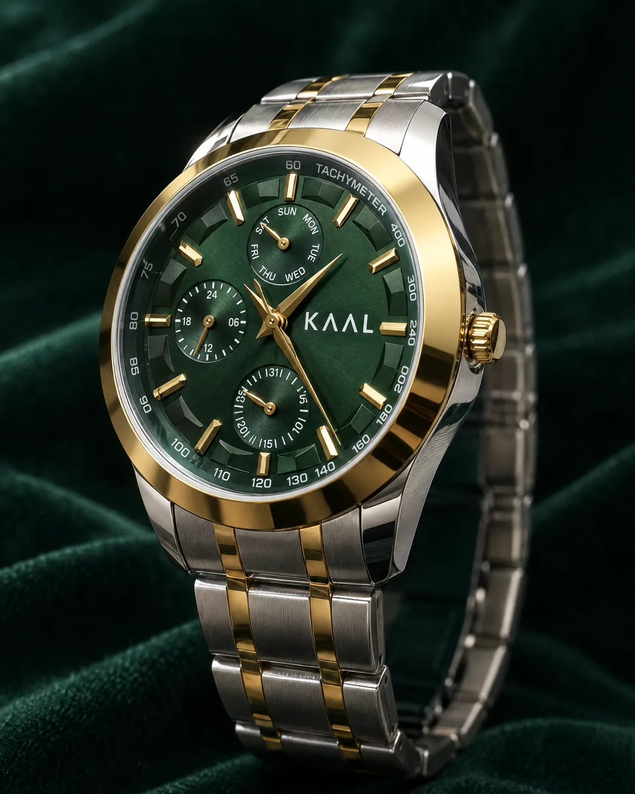
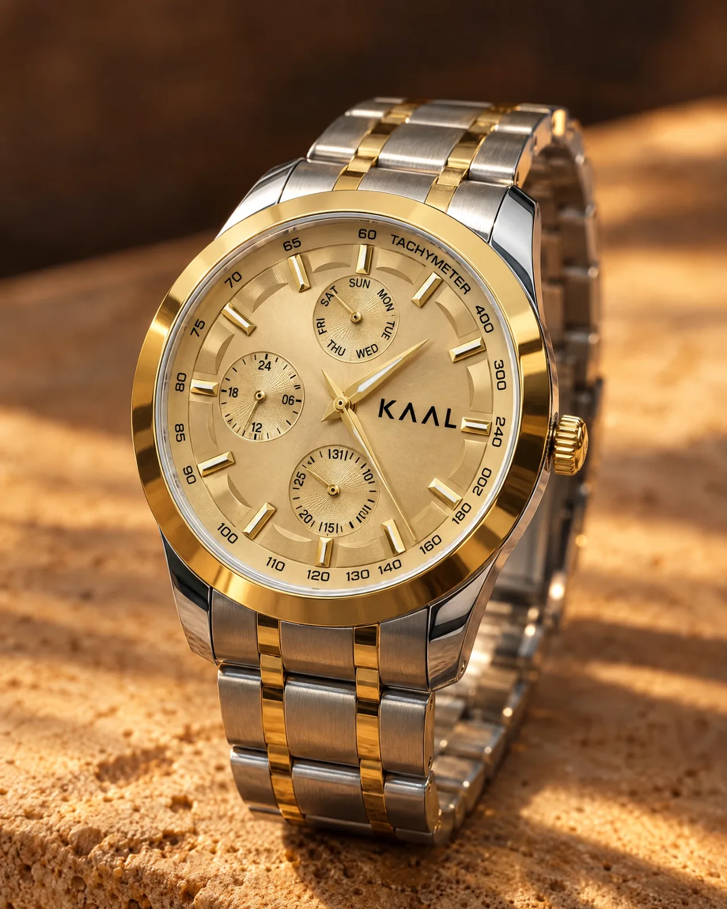
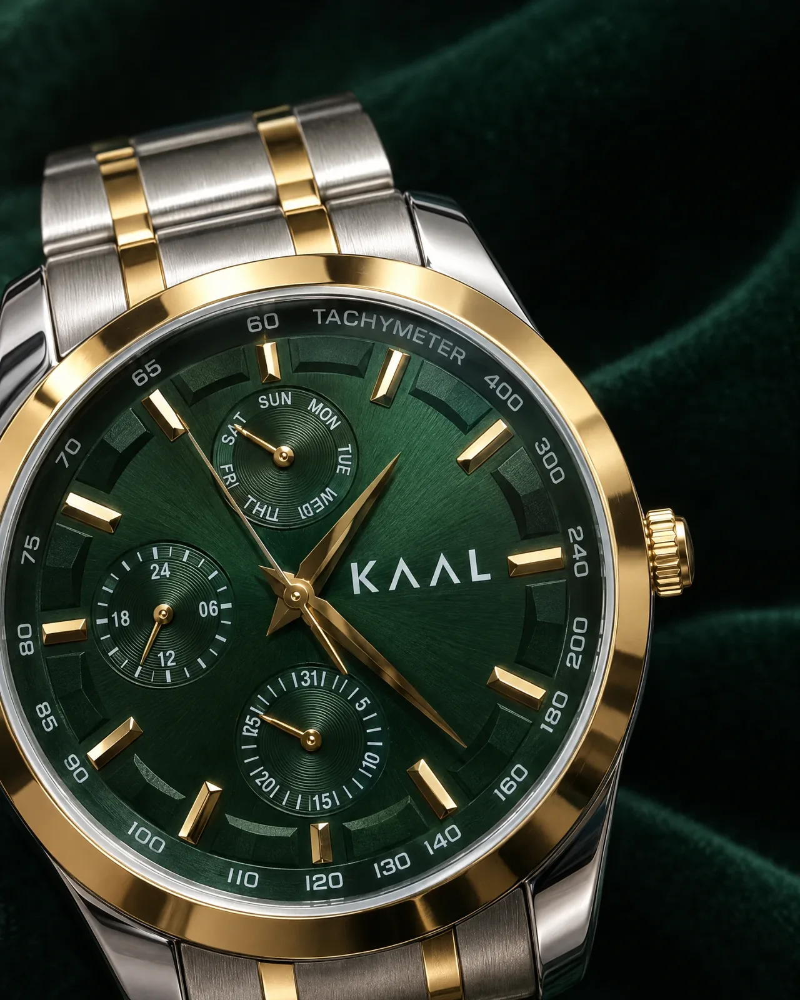

KAAL Series 01: twenty numbered watches from India
Most people disappear into the crowd. Twenty won’t.
17 of 20 · ₹5,999 · free delivery
Choose your numberKAAL means time.
In the same language, it names an era, one that ends and is remembered.
Twenty watches carry this design.
Then it is retired, and never drawn again.
- The movement
- Seiko Epson movementQuartz technology, for precise timekeeping. The specification.
- Backed for
- Twenty four monthsOn the movement, from dispatch. Not a card in a box: the terms are written down.
- If it is not you
- Seven days, refundedUnworn and unmarked, no reason asked. Your number goes back to the twenty.
- The price
- ₹5,999 all inFree delivery anywhere in India, five working days. Sold direct, never a marketplace.
Which one is yours?
01 · The rule
Most brands draw a watch, then make it forever.
We are making twenty. When the twentieth ships, Series 01 closes. There is no second run, no Mark II, no anniversary reissue, and no quiet return in a different strap.
The design retires with the twentieth buyer. That is the whole promise, and it is the only one that cannot be walked back.

02 · Four faces
One case. Four faces.
Twenty numbers.




Emerald
01–06
Midnight
07–10
Champagne
11–14
Ivory
15–20
03 · Emerald
Green reads black until the light finds it.
Sunray brushed, lacquered, then cut by the same gold bezel every piece carries. In a room it is a dark dial. Under a window it is not.

04 · Midnight
Rain is not an event.
Series 01 is water resistant. Caught in weather, washed at a basin, worn through a downpour on the way to somewhere better: none of that is a story, and none of it is your problem.
05 · Champagne
The loudest of the four. Still quiet.
A full champagne dial is a decision, not a default. It is the piece in the series that does not wait to be noticed, and the one most likely to go first.

06 · Ivory
Nothing to hide behind.
A pale dial shows every flaw in a finish, which is exactly why it is in the series. Day ring, twenty four hour counter and pointer date, all legible at arm's length in daylight.
07 · The hands
Every case is finished by hand.
By people who have spent their working lives doing this and nothing else. Not a season of it. A life of it.
That is why twenty takes the time twenty takes, and why every piece is opened, checked and closed again before it is boxed. Nothing leaves on a Friday because the week is ending.
- Case
- Finished by hand
- Inspection
- Every piece, every time
- Dispatch
- Five days
Each one worked individually, which is why no two are perfectly identical and why that is the point.
Checked and closed again before it is packed. None of the twenty ships unseen.
Order to door, anywhere in India. The inspection is inside those five days, not after them.
08 · The box
The next time it opens, it is yours.
Inspected, then sealed. You are the first to open it.
09 · The movement
Inside every one of them, a Seiko Epson movement from Japan.
Everything you can see is made in India, by hand. The one part that keeps time comes from Japan. It is the only part you cannot judge by looking, so it is the one where the name matters most.
We back it for twenty four months from dispatch, in writing, the same for everybody.
- Backed
- Twenty four months
- Serviced by
- Us, not a queue
On the movement, from dispatch.
One email. No portal, no ticket number.

10 · The door
Seven days.
Wear it. If it is not you, send it back unworn and unmarked inside seven days and we refund it. We will not ask why.
And we will not sell to you again.
Your number goes back to the twenty, and somebody else gets it. That is not a threat. It is what a closed edition means when it is real.
The owners
In their own words.
This is not for someone who needs a watch to speak for them.
It is for someone who has already been heard.
11 · The twenty
Seventeen remain.
Every number is engraved on one caseback, once.
1 · Choose a dial
2 · Choose your number
- Dial
- Emerald
- Movement
- Japanese Seiko Epson quartz, five hands
- Made in
- India, finished by hand
- Face
- Day ring, twenty four hour counter, pointer date
- Case
- Finished by hand, gold tone bezel, water resistant
- Case diameter
- Thickness
- Weight
- Lug width
- Glass
- Mineral glass
- Bracelet
- Two tone stainless steel
- Warranty
- Twenty four months on the movement, from dispatch
- Price
- ₹5,999, shipping within India included
₹5,999 is the lowest price KAAL intends to ask. The reasoning is written out here.
Number 03 carries the Emerald dial.
- Made in India, finished by hand
- Two years on that movement, from dispatch
- Seven days to change your mind, refunded in full
- Five days to your door, delivery included